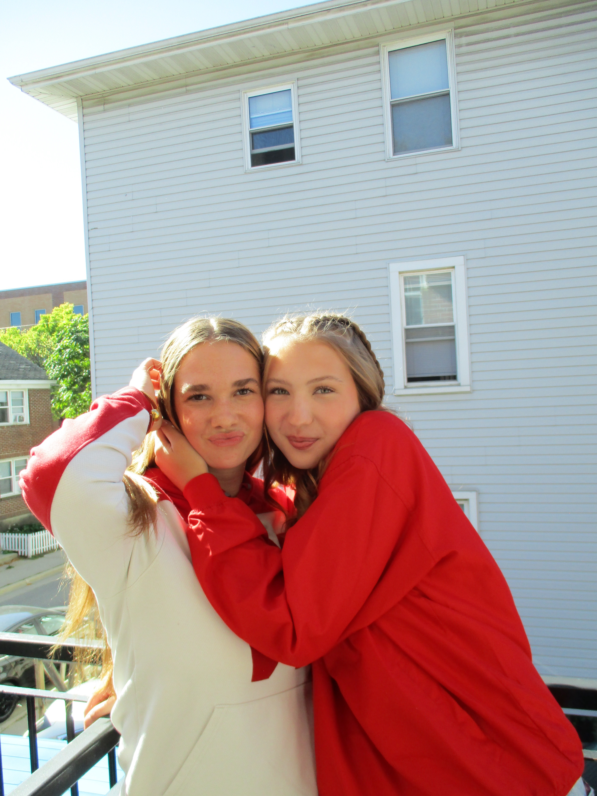
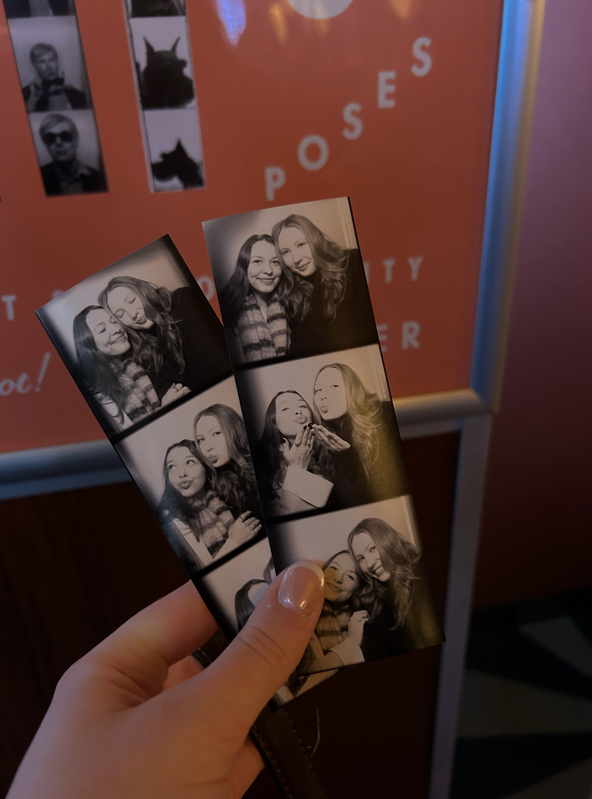
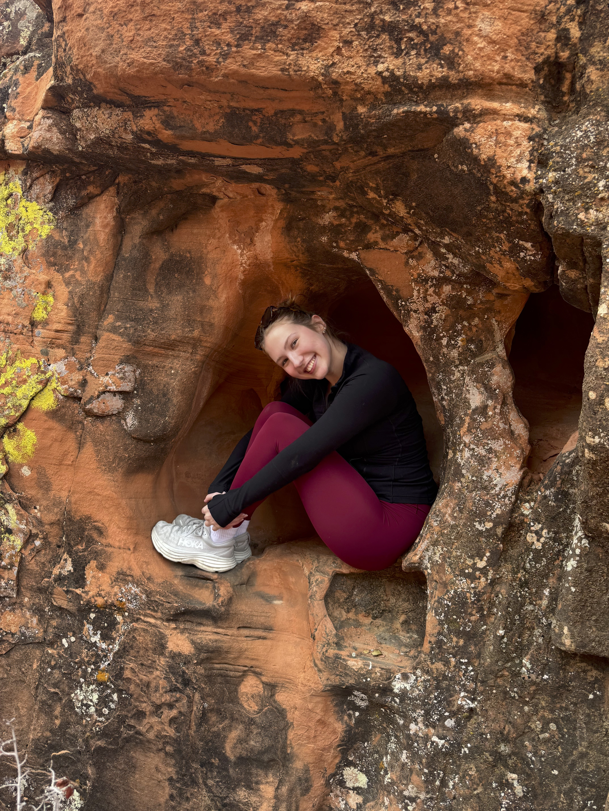

Fancy Seeing You Here
Hi! I’m Eleanor. An eager 20-year-old student at the University of Wisconsin–Madison who adores sharing her favorites. I’ve kind of made living in Madison my whole personality trait, and love to share recommendations, travel guides, and showcase my creativeness.
GET STARTEDBorn and raised just outside of Madison, WI, I grew up exploring lakes, forests, and small town streets, learning early the value of curiosity, community, and good coffee.
My hidden talent: turning any gathering into an event where snacks and good vibes are a necessity — bonus points if a kiddie cocktail is being served.
Michelangelo’s — grab a coffee and pastry, plus it’s a Madison classic!!
Tavernakaya — perfect girls night sushi.
Lake Mendota — you can never get enough of the sights from Mem U.
Over time, my sense of curiosity grew into a desire to create — not just to observe the world, but to shape how it’s seen and experienced. I’ve found myself drawn to the intersection of creativity and connection, where ideas turn into something tangible and meaningful. That’s a big part of why I document my life on social media, not because it’s perfect, but because it’s real. I love capturing the in-between moments, the small wins, the evolving dreams, and sharing them in a way that feels honest and intentional. I’m still evolving, still exploring, and still saying yes to the things that make me feel most alive — and inviting others along for the journey.

I create content that blends relatable, everyday moments with an intentional aesthetic, capturing life in a way that feels both honest and visually meaningful.

Follow along if you’re drawn to content that feels both relatable and inspiring, where everyday moments are turned into something worth remembering.
